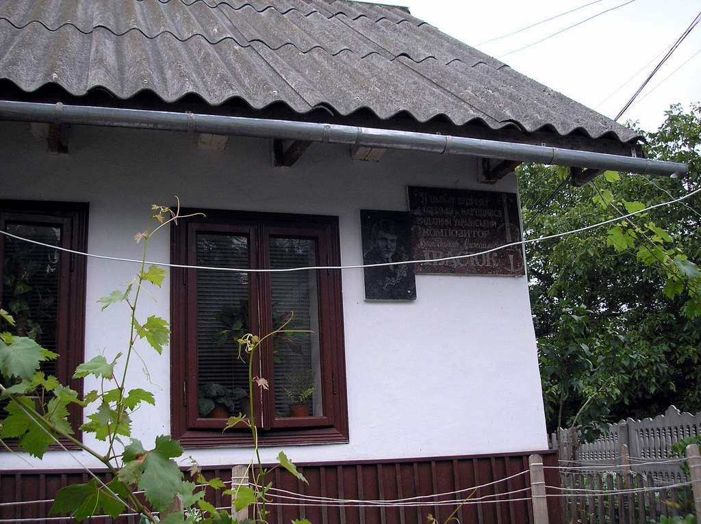

Біла садиба над Совицею: де починалася «Червона рута»
Білий одноповерховий будинок у Кіцмані був осередком щирої любові до рідного слова й пісні. Батько Михайло Григорович Івасюк — видатний письменник, поліглот і фольклорист, який відбув роки сталінського ГУЛАГу, але зберіг незламну віру в Україну. Мати Софія Іванівна Карякіна, уродженка південного степу, прищепила синові надзвичайну душевну ніжність.
У домі постійно звучала народна казка, скрипка та класичні мелодії. Володя змалку годинами вслухався у веснянки й колядки, які співали на вулицях Кіцманя, занотовував перші ритми та малював нотні знаки ще до того, як навчився грамоти.
«У цьому будинку 4 березня 1949 року народився видатний український композитор Володимир Івасюк» Напис на гранітній меморіальній дошці фасаду